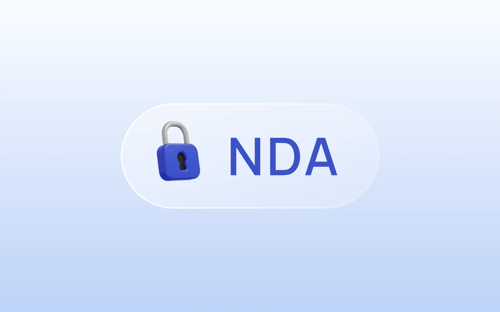

Текущее место работы
ВТБ — контактный центр для малого и среднего бизнеса
Работаю над интерфейсами контактного центра ВТБ. Наладила взаимодействие с пятью командами стрима и подготовила дизайн для двух поставок на площадки в Барнауле и Чебоксарах: спроектировала раздел управления операторским интерфейсом и обновила сценарий аутентификации клиента. Инициировала проверку решений на фокус‑группах операторов.
Результат
Новый раздел управления операторским интерфейсом помог в сжатые сроки перейти с внешнего решения, которое перестало соответствовать политике банка.
Обновлённый сценарий аутентификации помог сократить среднее время обработки обращения (AHT). Одновременно отмечен рост удовлетворённости клиентов (CSAT).
Проверка решений с операторами помогла сократить возвраты задач и доработки после релиза. В первые недели и месяцы после запуска команда стала тратить меньше времени на исправления.
NDA · Расскажу о проекте устно